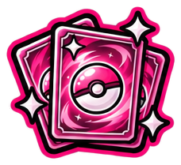

Start hier! 💗Pokémon TCG beginnersgids!
Nieuw in de Pokémon TCG? Je hoeft echt niet alles in één keer te snappen. Met deze stappen ontdek je rustig hoe verzamelen werkt, zonder meteen veel geld uit te geven.
Wat wil je verzamelen?
Je kunt je richten op je favoriete Pokémon, één set, speciale illustraties of gewoon kaarten die je mooi vindt. Er is geen verkeerde manier van verzamelen!
Leer hoe Pokémonsets werken →Wat staat er op een Pokémonkaart?
HP, energie, aanvallen, setcodes en kaartnummers: het lijkt veel, maar je herkent de onderdelen al snel.
Lees de uitleg van een Pokémonkaart →Boosters, ETB's of losse kaarten?
Een booster openen is leuk voor de verrassing. Zoek je juist één specifieke kaart, dan is los kopen vaak gerichter. Een Elite Trainer Box bevat naast boosters ook accessoires.
Sealed bewaren of boosters openen? →Sleeves en binders
Een zachte sleeve beschermt je kaart tegen oppervlakkige beschadigingen. In een geschikte binder kun je je collectie overzichtelijk bewaren.
Kaarten beschermen → · Bindergids →Voorkom miskopen
Vergelijk prijzen, controleer kaartcondities en wees voorzichtig met onbekende verkopers en namaakkaarten.
Nepkaarten herkennen → · Kaartwaarde bepalen →Beurzen, winkels en ruilen
Op een beurs kun je andere verzamelaars ontmoeten en kaarten bekijken. Via de winkelkaart vind je verkooppunten in Nederland.
Bekijk Pokémonbeurzen → · Zoek winkels →Mijn belangrijkste tip
Stel je eigen budget vast en verzamel vooral waar jij blij van wordt. Niet iedere set of hype hoeft mee naar huis. 💗
Alle tips & tricks → 📖 Pokémon TCG woordenboek →